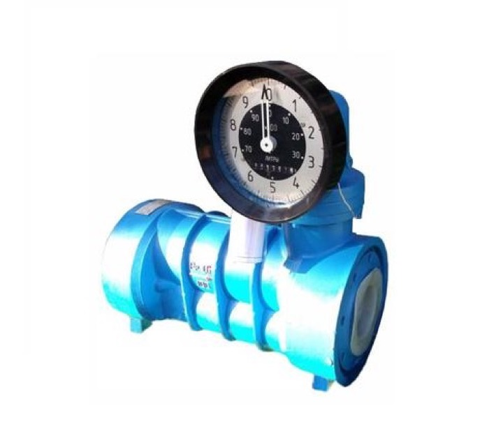

Счетчик жидкости ППВ 100-1,6 (0.5кл т, ДТ)
Промприбор (Ливны)
Раздел: с механической индикацией · АЗС
| Класс точности | 0,5% |
| Тип жидкости | Дизель |
Цена и наличие — по запросу. Поставляем оригинал и аналоги. Доставка по России.
Описание
Счетчик жидкости ППВ 100-1,6 (0.5кл т, ДТ) производства Промприбор (Ливны) — позиция из раздела «с механической индикацией» для АЗС. Компания SYNDICAT поставляет оборудование и комплектующие для автозаправочных и газозаправочных станций по всей России. Цена и наличие «Счетчик жидкости ППВ 100-1,6 (0.5кл т, ДТ)» — по запросу: оставьте заявку или позвоните, подберём оригинал или аналог и рассчитаем доставку.